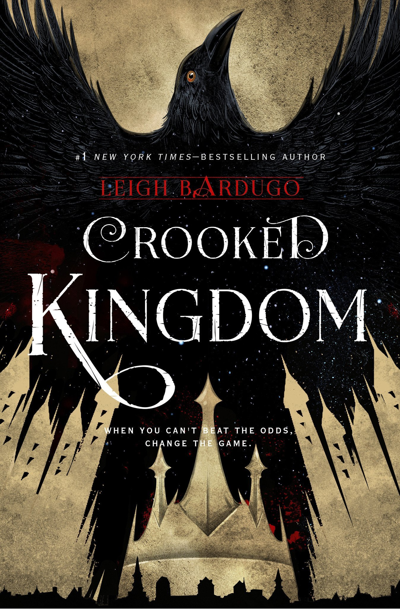
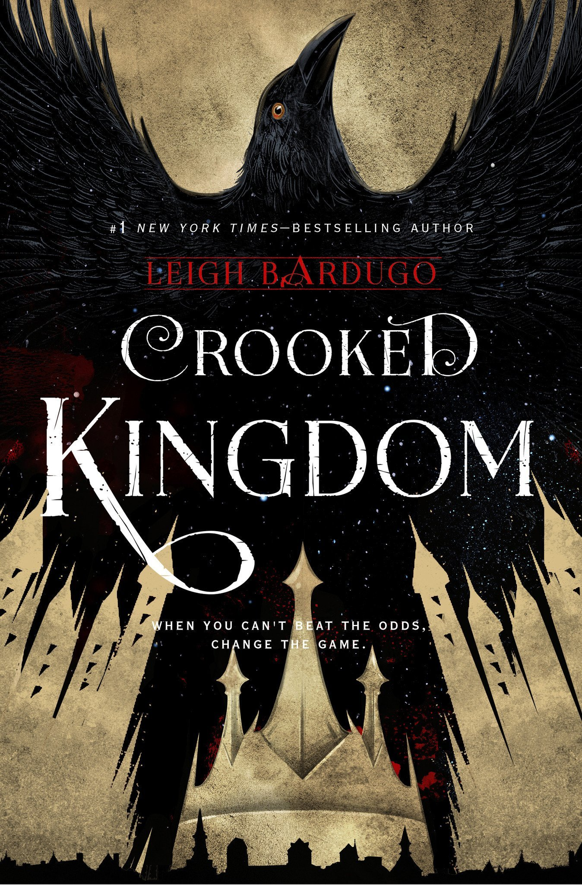
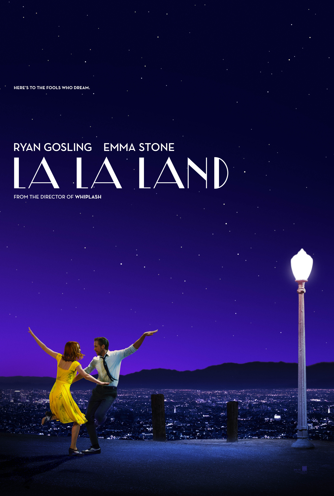
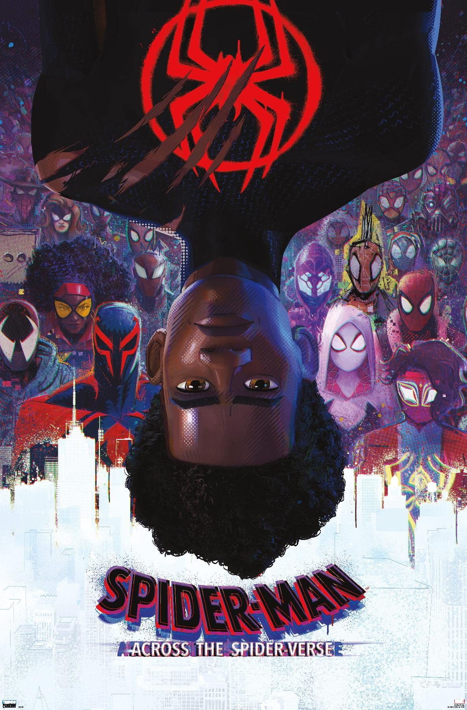
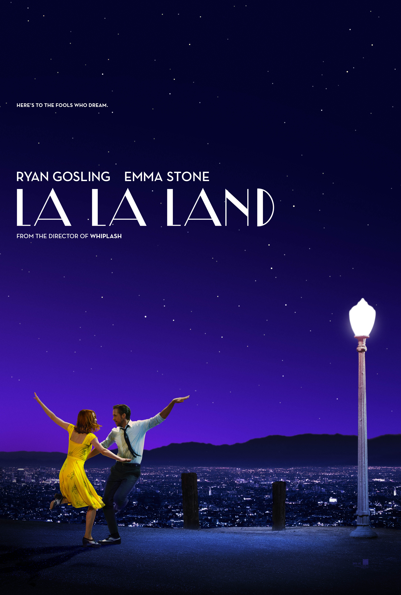
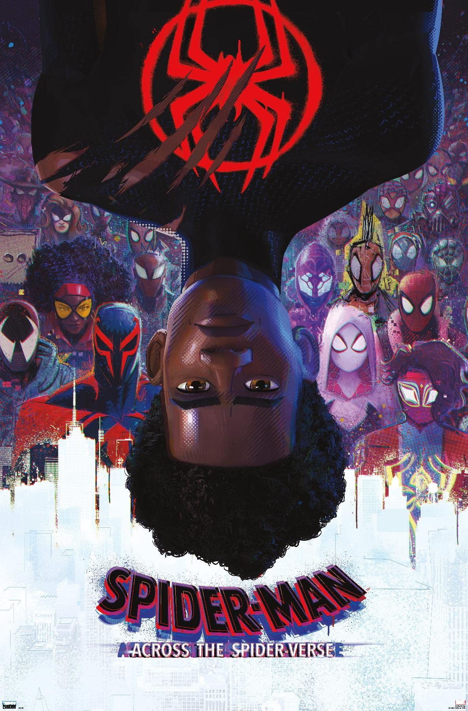
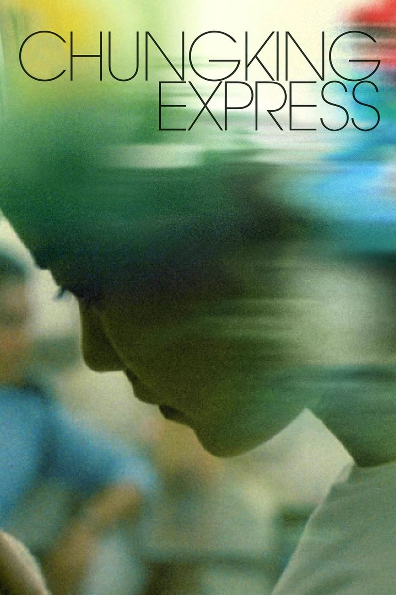
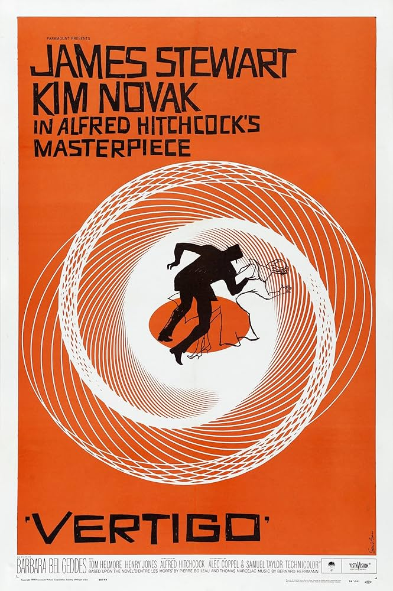
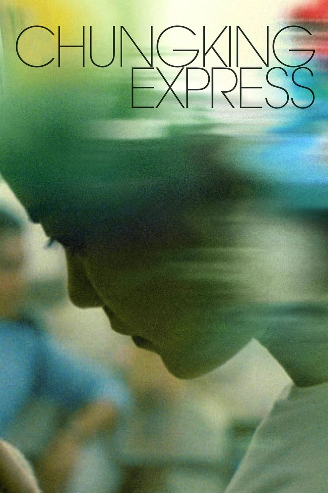
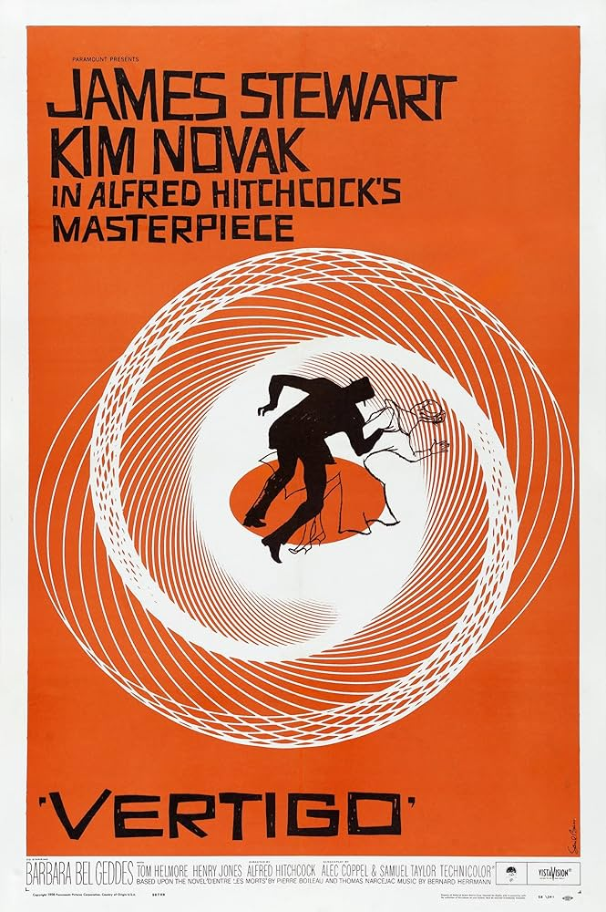

Hobbies
So here's a little more about myself. Here are some of my hobbies and things I like.
I really like cooking and though I am still a beginner, I know how to make some nice recipes. One of my favorite dishes I know how to make is lasagna. I enjoy making cakes and cookies, but I also love making salads and smoothies, the healthier, the better.
I am a big fan of books as I have been reading my whole life. I started reading a while ago in school and I fell in love with some of the books we were assigned, so I decided to give reading for fun a go. My favorite genres are fantasy and sci-fi, though I will read any book that comes to mind. I have been reading a lot of classics too, starting from school and then expanding my home library with a lot of them. Not only books, but I also really enjoy comics, combining my love for art and reading.
Some of my favorites:
 



I love spending my free time watching movies, too. I grew up watching a lot of them, mostly rewatching my favorites. Ever since I went to the cinema for the first time some years ago, my love for movies was truly born. Since then, I have spent countless hours watching every one I could find. I even wished to become a film director one day, inspired by all the beauty I saw in filmmaking.
Here are some of my favorite movies:
 



 



I also love learning new languages. I watched many cartoons when I was little so that's how I learned to speak English. Through the years I started learning Spanish online, then some years after that Japanese, too. In middle school I started learning German and that's the language I am still actively trying to perfect.